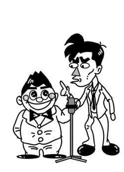
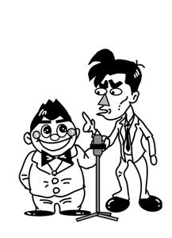
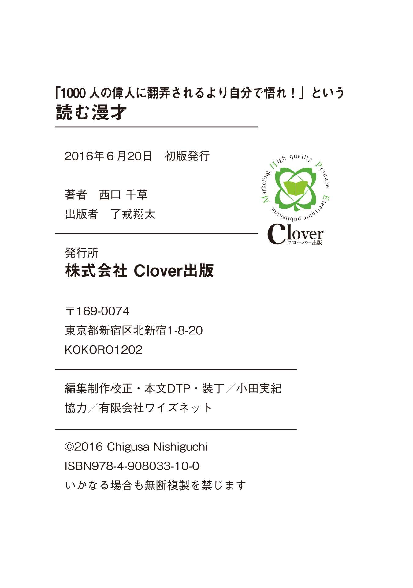
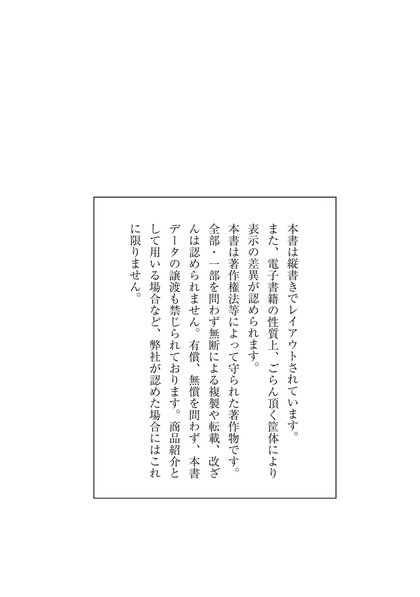

| 「1000 人の偉人に翻弄されるより自分で悟れ！」という 読む漫才 | |
| 西口 千草 | |
| kuroobaashuppan (2016) | |
まえがき
お笑いというものに暫く関わっていたので漫才形式で心の本を書けないかと考え形にしてみました。
正直当時は相当メンタルの弱い芸だったと思います。「はい、どーも」と元気良く舞台に飛び出して、前列でだるそうにケータイをいじって舞台に全く目を向けようとしない女子高生を見つけ立ち直れなくなり、その舞台のギャラの何十倍もするセラピーを予約する......みたいな。
ここまで書くと「ああ、昔は苦しんだけど何かしらの出会いがあって意識改革が起こって別人のように生まれ変わった人が書いた本ね。ありがち、ありがち」と思った方もいらっしゃるでしょう。
とんでもない！ 情報商材の宣伝文句じゃあるまいし、夢のような変化なんか起こってません。今だってしんどいですよ。今だってしんどいけど......私、回復力も凄いんです！ どーんと浮かれた後にまたどーんと落ち込んで前に落ち込んだところからほんの一目盛上のところで留まって、毎日それの繰り返し。
だからこの本は皆さんを牽引する本ではなくて一緒に走る伴走本です。しんどかったら歩きましょう。歩くのも辛かったら止まりましょう。その場に大の字で寝っころがりましょう。空の広さに癒されたらまた起き上がりましょう。そしてまた一緒に走りましょう。
ページをめくるとそこは昭和のにおいがする演芸場。はっぴを着たおばちゃんが缶ビールとおつまみを売っています。椅子の硬さを感じてください。お囃子が大きくなってサトル・クサルというかなり古風な売れない漫才師が登場します。原色のジャケットに大きな蝶タイをつけた二人組み、その二人はどこか私に似ているし皆さんに似ているかもしれません。
寄席に足を運んだと思ってどうぞごゆっくりお楽しみください。

クサル......漫才師「サトル・クサル」のボケ。その名の通り、思い通りにならない自分や周りに対して腐っている。心については本やセミナーなどで学んでいるが、上手く扱えてはいない。
サトル......漫才師「サトル・クサル」のツッコミ。その名の通り、どこか悟りを開いたような面が垣間見える好人物。とくにどこかで心について学んだことはなく、その穏やかさは天性のもの。
【ネタ①君のその夢ほんまもん？】
サトル「どーもこんにちは～、サトルでーす。」
クサル「クサルでーす。そして僕のうしろにおるのがマモルでーす。」
サトル「？......誰もおらへんやろ。」
クサル「気にせんとって。俺にしか見えへんから。」
サトル「メチャメチャ気になるわ！」
クサル「ただの守護霊やから。シッ！ 静かにしい。マモル、お座り！」
サトル「お前の守護霊、犬かい！」
クサル「なんかスピリチャル本メッチャ読んでたらいろいろ視えるようになって。」
サトル「へぇ、お前本読むん？ 意外やなぁ。」
クサル「占いの本に心理学の本、哲学書にビジネス書に......。」
サトル「ビジネス書てなんかシャキーンとするタイトルの本やろ？」
クサル「『君のやる気がすべてを変える』......みたいな？」
サトル「そうそう。」
クサル「古いなぁ。最近は具体的にイメージを湧かせるために数字を入れたタイトルも多いで。『成功者なら誰でも知ってる７つの常識』とか、答えを知りたくなって本を手に取るように疑問系のタイトルのやつも結構見る。『なぜマイナスの言葉をやめるだけで出世できるのか？』とか。さすがに最近飽きてきたけど。」
サトル「何それ？ そんなビジネス書ある？」
クサル「それからメッチャ優しいオカンみたいな本ね。」
サトル「なんやそれ？」
クサル「あなたはそのままでいいのです......あなたの存在は宇宙に愛されているのです......とか言うてくれるヤツ。」
サトル「はいはい。ふわ～っとした感じの。」
クサル「俺そのままでええんかなぁ？」
サトル「知らんがな。」
クサル「（いきなりサトルをビンタ）」
サトル「イタッ！」
クサル「俺そのままでええんかなぁ？」
サトル「ええわけないやろボケ！ 宇宙が愛しとろうが何やろが俺はお前を全力で嫌うぞ！」
クサル「アカン、お前全然オカンちゃう。」
サトル「いや、もともと俺オカンちゃうし......。結局さっきからお前は何が言いたいねん？」
クサル「決まってるやろ！ なんでこんなに幸せになるための本読んで俺の夢ひとつも叶わへんねん！」
サトル「そういうことか。ほな聞かして貰うけどお前の夢てお前自身が思い描いたほんまもんか？」
クサル「は？」
サトル「せやからお前が叶えたい夢はホンマにお前自身が思い描いたものと言い切れるかと聞いてるんや。」
クサル「当たり前やろ！ 俺が水飲んでお前がオシッコ行けるんか？」
サトル「わけわからん例えやけどとにかく落ち着け。実は自分で考えたようで親や世間に持たされた夢って結構あるっちゅー話やねん。」
クサル「あぁ、いい学校入っていい会社入って......入ってみたらアレ？ 全然嬉しない。これよぅ考えたら親の夢やーんてヤツ？」
サトル「女の人だったらまわりの友達がみんな彼氏持ちで自分もクリスマスまでに彼氏つくんなきゃとか。」
クサル「大丈夫、俺の夢クリスマスまでに彼氏つくることやないし。」
サトル「当たり前やろ！ 他にもあるで。例えばさっきのええ会社とは逆に子供には好きな道で成功してもらいたいと考えてるケース。」
クサル「結構なことやないか。」
サトル「ところがその子はほんとはそんなことやりたくない。その場合、自分が全く開けたくない狭き門に突進して行かなアカンわけや。」
クサル「地獄やなぁ。」
サトル「全ての人が夢を持つのが良いこととされてるのが一因ちゃうかなぁ。夢ではなくて小さな目標でもいいし、ただ毎日を楽しむだけでもええと思うんやけどなぁ。」
クサル「確かに家帰ってオカンがグラドルになっててオトンがラッパーなてたらメチャメチャ凹むわ。」
サトル「いや、もともとそんな夢もってへんやろ！」
クサル「でも俺らはやりたいことをそのまま仕事にしたクチやからそんな勘違いはせーへんやろ？」
サトル「ところがどっこい夢の賞味期限が切れとる場合があるねん。」
クサル「賞味期限？」
サトル「そう、新たな夢が心の奥で芽吹いてて前の夢を叶えようと考えても楽しくなくなってるのに『お前は夢をあきらめるのか？』なんて自分が出てきて過去の夢に固執させる。」
クサル「世間に、親に、自分までもが自分を勘違いさせることがあるんか？」
サトル「お前の好きな潜在意識うんぬんの話で言えば心が畑で夢が種やろ。ちゃんと発芽するものを捲いてないから芽ぇ出ーへんのかもよ。」
クサル「お前かて芸人として芽ぇ出てへんくせに。でも確かに畑にチョコボール捲いて水やっても芽ぇ出ーへんわな。よっしゃ、俺の夢ほんまもんかどうかちょっと考えてみるわ。ポクポクポク......。」
サトル「一休？」
クサル「チーン。うん、俺の夢ほんまもんやわ。」
サトル「よかったやん。」
クサル「この舞台のギャラお前の分まで振り込まれますようにっていう俺の夢ほんまもんやったわ。ありがとう。」
サトル「やかましわ！」
サトル・クサル「どーもありがとうございましたー！」
【ネタ②荒んだ心をなんとかしよう】
サトル「どーもこんにちはサトルでーす。」
クサル「クサルでーす！」
サトル「お、お前いつになく元気やなぁ。」
クサル「わかるか？ 実は俺の守護霊さんがなんと犬やのうなったんや。」
サトル「へー。」
クサル「それはきっと俺自身の人格がレべルアップしたからや思うねん。言うたら魂の出世やな。紹介しよう！ チンパンジーのメス、エテ子ちゃんや。」
サトル「一応霊長類にはなったんや。で、エテ子ちゃんどこにおるん？」
クサル「あぁ、そこで玉ネギ剥いて、剥いても剥いても中身でてこーへんから癇癪起こしてる。」
サトル「うわぁ、全力で猿やなぁ。」
クサル「この前のネタの続きをやってくれへんか？」
サトル「この前？......あぁ、畑と種の話か。言うとくけど俺は心の専門家でも何でもない一人の芸人やし、俺自身が生きてきた中で学んできたことばかりやからな。参考になるかどうか......。」
クサル「いやいやいやいや、今そーゆーのに飢えてんねん。宇宙とか神とか高尚な本読みすぎてお腹一杯の人間にはしょうもない芸人のしょうもない寝言こそがええ感じの箸休めになるんよ。」
サトル「あぁ、殺意湧いてきた。」
クサル「そもそも畑て何ですのん？」
サトル「畑は心。脳でもええかな？」
クサル「なるほど、心に夢を強く思い描けとか書いてあるもんな。最近は思い描いて一旦忘れろ......なんてのも多い。せやけどそれって無茶振りちゃうのん？ 自分の夢忘れろ言われて忘れられるわけないやなぁ。」
サトル「忘れろ！」
クサル「......誰やお前？」
サトル「忘れすぎやろ！ 健忘症か。」
クサル「ケン坊と呼んでくれ。」
サトル「誰が呼ぶか！ えぇと、どこまで話したっけ？」
クサル「心は畑と言うところや。」
サトル「そうそう、とにかく心である畑がどういう状態であるか自分で理解できてるか？......っちゅーこっちゃ。石ゴロゴロ、雑草ボーボーのところに種なんか蒔きたくないやろ？」
クサル「夢叶うどころか運まで悪くなりそうやな。つうかそもそもそんな荒地に植物育てようとは思わんやろ？」
サトル「ところが心ばっかりは人と取り替えることができひん。金で買うこともできひん。メチャメチャ荒れ地でも自分で開墾していくしかない。」
クサル「めんどくさいなぁ。......で、心が荒れまくってる時はどないしたらええのん？」
サトル「手っ取り早いのは一度泣いてみることやな。」
クサル「ミーンミーンミーン......。」
サトル「生き物の鳴くやない！ 涙を流す方や。」
クサル「なるほど。」
サトル「マイナスの感情をまず吐き出さないとどないもならんやろ？ お腹いっぱいの時にどんな美味しそうな差し入れ貰っても食べられへんのとおんなじや。だから出す！ 物理的に出す！ そのためには一人で泣いてスッキリするのが一番。」
クサル「オロローン、オーイオイオイ、メソメソメソ......。」
サトル「なんや、その古典的な嘘泣き３点セットは。」
クサル「せやかて大の男が簡単に泣けるかいな。あと一人でいうのはなんか意味あんのん？」
サトル「他人の同情が欲しいとか、責任逃れの切り札に使ったりとか、誰かと争ってる時に第三者に『こちらの方が正義であり弱者だ』と知らしめるために利用したり、まぁ涙を利用しようとする奴が多いからな。一人自分のために泣いてやる。コレ正解。」
クサル「でも俺最後に泣いたんは小６ん時ウ○コもらした時以来やからなぁ。」
サトル「例えば泣ける映画、ドラマ、音楽、小説、演劇......そうそう『演劇ユニット言葉の動物』ちゅー団体の作る芝居はなかなか感動できるらしい。」
クサル「シレッと宣伝混ぜんな。」
サトル「ベタやけど昔飼ってたペットのことを思い出すとか。」
クサル「あぁ、幼稚園の時飼ってたテントウムシのナナちゃんが朝起きたらひっくり返って死んでたときは俺も後を追おうかと思ったもん。」
サトル「虫の後を追うな！」
クサル「他に泣ける方法は？」
サトル「うーん......そういやこの舞台の席亭（劇場の責任者、この場合は著者）も心が弱くてストレスで顎関節症になるような人なんだけど......。」
クサル「あぁ、アイツは調子ええ時メチャクチャ喋るからたまには口が開かなくなったほうがいい。」
サトル「それについては珍しくお前と同意見やけど、あの人はドツボにはまった時、ＮＬＰってのをやるらしい。」
クサル「ＮＬＰ......過去の記憶から今何が得たくてこういう生き方をしているのか？ どんな考えが成功を妨げているのか探る奴ヤツやろ？」
サトル「詳しいなぁ。とにかくそれがはまるとドドドドーッと涙が出てスッキリするらしい。原因に直接アクセスして流す涙やからホンマモンやしな。あと逆にこういった寄席やお笑いライブに足を運ぶのも悪くない。」
クサル「なるほど。俺らの漫才があまりにもしょうもなくて泣けてくるっちゅーこっちゃな......って！ ドアホ！」
サトル「ドアホはお前や！ お前みたいに泣くのが難しい人は逆に笑えっていう話をしたかったんや。」
クサル「確かに俺子供の頃学校で嫌な事があっても家でコント番組見たらすっかり元気になってたからな。つうか俺が芸人になった理由それやねん。貰うた元気を返そと思って。」
サトル「たまにはええこと言うやん。主護霊が猿の男とは思えへんな。」
クサル「おもいっきり笑う、おもいっきり泣く......あと何がある？」
サトル「おもいっきり叫ぶというのもあるな。後輩が舞台ですべり倒した時風呂に潜って叫ぶ言うてたで。」
クサル「よーし！（息を吸い込む）」
サトル「アホか！ どこの世界に己のストレス解消に舞台で叫ぶ芸人がおんねん?! 見てみぃ、前のお客さんビックリしてるやろ。スポーツ観戦でもええし最近はお一人様専用カラオケ店なんかも増えてきてるんやから然るべきべきところで叫べ！」
クサル「ほーい。」
サトル「他にはグチや文句を書き殴ってその紙をビリビリに破くとか、ＳＮＳにグチって一瞬で削除するとか、マイナスが出て行くと暗示をかけておもいっきり息を吐き出すとかみんないろいろやってるぞ。」
クサル「ふーーーーーっ！」
サトル「くさっ！ 昼は餃子か？ なんで俺に向って吐くねん！」
クサル「息を吐くのに然るべきところかなぁ思て。」
サトル「腹立つなぁ。」
クサル「めんどくさいこと言わんとパーッと呑みに行ったらええんちゃうん？」
サトル「勿論それもええけどただの気晴らし、憂さ晴らしになると何かの依存症になったりする可能性あるからな。あと最低なのが八つ当たり。自分の畑の石が邪魔やからと他人の畑に放り投げる。そういう奴はいつか自分めがけて石が飛んでくるからな。」
クサル「うわぁ、八つ当たり最低やなぁ。」
サトル「ところでお前将来俺らに弟子が来たらどうする？」
クサル「うん、コンビ名スベル・オワルにしたろ思て。女の子やったらムクミ・タルミ。だって俺師匠からつけてもろた名前クサルやで！ 弟子には絶対俺と同じ思いを味わって貰う。」
サトル「お前が一番八つ当たりしてるやないか！（クサルをブッ叩く）」
クサル「.........。」
サトル「あれ？ お前。あんなに泣かれへん言うてたのに泣いてるやん。」
クサル「うわーん！ 痛い～！ 相方が叩いた～！」
サトル「ええぇぇぇ～?! 、まさかの痛みでぇ～！ さっきまで大の男が泣けるか言うてたやーん。」
クサル「痛い～痛い～オトンにもぶたれたことないのに～～～！」
サトル「お前はアレか！」
サトル・クサル「どーもありがとうございましたー。」
【ネタ③アンチプラス思考の人へ】
サトル「はいドーモこんにちはサトルです。......え～、今日はクサルのアホが寝坊しやがりまして今必死で向かってるらしいんですが、いつ到着するかわからないんで僕一人で手品やりまーす。......はい！」
何もない所からハトを出す。客席拍手。ハト上手（かみて）に飛んで行く。
クサル「痛い痛い！ コレなんとかしてくれ（上手からハトにつつかれながら登場）!! 」
サトル「おお、クサル今着いたんか？ 心配したぞ。」
クサル「ホンマに心配してるんやったらまずハト何とかせんかい！」
サトル「わかった（ハトを消す）。」
クサル「消えよった！ 見事なもんやなぁ。」
サトル「まぁお前のことやからこういうこともあるやろなぁ思て、前々から仕込んどいたんや。それよりお客さんに遅刻したこと謝らんかい。」
クサル「いやぁ～、ほんまスンマせんでした。せやけど今日はガチでついてなかったんですわ。」
サトル「どんなふうに？」
クサル「まず日頃の疲れがドッと出たんか10 時間以上寝てもーて、そんな時に限って目覚ましの電池切れてて......。」
サトル「あるある。」
クサル「それで起きて着替えてたら『宅急便でーす』や。『留守でーす』言うてんけど『おりまんがな！』言われてズボン半分履いたままハンコ探して......。」
サトル「荷物は誰からやってん？」
クサル「オカンや。米と野菜と佃煮。それからダッシュして何とか電車乗れてんけど今日に限って混んでてな。後ろにおったビア樽みたいなオバハンに腹で吹っ飛ばされてよろめいたところに直径70 センチくらいのアフロのニイチャンの頭があって......ズボッといってもうて。」
サトル「うわぁ。」
クサル「視野いっぱい毛ぇやねん！ もう毛の国や。」
客席から笑い声
クサル「おい、誰や！ 人の不幸を......。」
サトル「ウケとんねん！ それからどうなってん？」
クサル「ニイチャンの怒りを鎮めるために手売りのチケット、タダで渡して......。アレ売ったらギャラになったのに。」
サトル「そーか、大変やってんな。せやけど俺はお前がついてないとは全然感じひんかったで。」
クサル「へ？」
サトル「まず目覚ましが止まってたからガッツリ睡眠がとれたわけやし。」
クサル「まぁ、そやねんけど......。」
サトル「帰ったらオカンが送ってくれた食材で豪華メシや。ここんとこ袋入りの具なしラーメンが続いてる言うてたやん。」
クサル「うん、久しぶりに炭水化物以外の物食えるな。」
サトル「笑いもとれたし。」
クサル「そうやなぁ。」
サトル「おまけに見てみ。一番後ろの席。」
クサル「......ん？ なんやあの規則正しく並んだ黒い球体は？.........あっ！ アフロのニイチャンや！ 友達連れて観にきてくれたんや！ 友達もみんなアフロなんや！」
サトル「どうや？ これでもお前の一日ついてへんかったか？」
クサル「ついてる......かもしれへんなぁ。よう考えてみると。」
サトル「見方を変えればだまし絵みたいなもんでマイナスがプラスにひっくり返ったりするもんや。同じ一日を違う人が過ごしたら全く違う感想を持つかもしれへんやろ？ ちなみに俺は底抜けに陽気な友達を頭の中にストックしておいて『アイツやったらこの状況屁でもないんやろなぁ』『逆にチャンスに変えるかも？』なんて考えるのが好きなんや。」
クサル「なるほど、今回のネタはプラス思考やな？ でもアンチも多いよな。プラス思考では何も解決しないとか単なる誤魔化しだとか現実と向き合ってないとか親の敵みたいにケチョンケチョんに叩く人も少なくない。」
サトル「でも、今俺がお前に言うたこと全部嘘や誤魔化しのない現実やったやろ？ 現実って唯一無二の物みたいに思てるかもしれんけど俺の現実とお前の現実は全く違うもんやからな。」
クサル「言うてることはわかるけど誰であっても凹むことってあるやろ？ それをプラス思考で乗り切れるかっちゅー話。例えば家族の死とか......。」
サトル「じゃあちょっと練習してみよか。俺のお爺ちゃんが亡くなって今日は葬式、お前弔問客になって俺をプラスの言葉で慰めてくれ。」
クサル「......ご愁傷さまです。この度は大変急なことで......ご親族のお気持ちを考えると胸が痛みますが......。」
サトル「はい。」
クサル「とりあえず食費が一人分減って良かったですね。」
サトル「人の爺ちゃん何やと思てんねん！」
クサル「嘘偽りのない事実やないか。」
サトル「もっとほっこりする言葉を選べ。90 才までお元気だったから大往生だとか先に亡くなったお婆ちゃんと会えただろうとかいろいろあるやろ！」
クサル「やっぱりプラスに考えるって難しいなぁ。」
サトル「何も悲しんだらアカン、落ち込んだらアカンちゅーことやないんやで。」
クサル「あ、ええのん？」
サトル「俺のプラス思考は従来のヤツよりパワーアップしてるから。ハイパープラス思考とでも呼んでくれ。」
クサル「どこかの女優の別れた亭主みたいやなぁ。普通のヤツと何が違うん？」
サトル「最悪を予想してもいいところ。お前が何らかの理由で来られなくなった時どうするかを考えておくってのは一見マイナスのようでプラスやろ？ 結果がＡになってもＢになってもいいように低い方をあらかじめ底上げしておく。その上で『なるようになる』とつぶやくことはただプラスの言葉で自分を納得させることと全然違うやろ？」
クサル「どっちに転んでもプラスと思えるようにしておくってことか？」
サトル「もうひとつは時間差で使ってもいいところ。」
クサル「何じゃそりゃ。」
サトル「これはキツイという出来事に対してはしっかり悲しんだり落ち込んだりしておく。充分出し切ったら『これをプラスに変えるには』と考えてみる。」
クサル「確かに起こったことに対していきなりプラスに考えるのは難しいもんな。」
サトル「最後にその言葉が本当に自分にとってプラスなのかよく考える。」
クサル「本当に自分にとってプラス？」
サトル「例えばお前の姉ちゃんが体重１００キロで医者からも痩せろと言われてたとする。」
クサル「失礼な、俺の姉ちゃんは80 キロや！」
サトル「その姉ちゃんがダイエットを始めてんけど４日目ポテチの誘惑に負けてしまった。」
クサル「うん、いつも１４０グラムの大袋開けて粉薬飲むみたいに流し込んどるわ。」
サトル「そこで姉ちゃんが一見前向きな一言。
『三日頑張れたんだもん。今日は誘惑に負けちゃったけど、明日からまた頑張るわ。』
『太ってる方が私らしいし今ポッチャリが流行りだからこのままでいいわ。』」
クサル「後の台詞をほざいたら膝蹴りでポテチ吐かせる。」
サトル「そう、こういうのはプラス思考とは言わんわな。」
クサル「ようわかった。せやけど俺はお前のハイパープラス思考を余裕でノックアウトできるハイパーマイナス思考持ってるからね。長年の思い癖ちゅーのはなかなか変わらんやろ？」
サトル「意識してプラスの言葉を口に出すようにしていけばちょっとずつ変わっていくと思うで。慌てず急がずちょっとずつでええねん。」
クサル「よっしゃ、ちょっとずつ口に出して行くぞ。こんなボロい劇場でも立てるだけ良かった。安いギャラでも貰えるだけ良かった。あんなヨボヨボの師匠でも生きてるだけ良かった。」
サトル「お前それただの悪口になってるぞ。」
クサル「あんな変な髪形の客でも来てくれて良かった。」
アフロ「（客席から）なんやとゴルァ!! 」
サトル・クサル「どーもスンマセンでしたー！」
【ネタ④魔法の言葉教えたろ】
サトル「はいドーモこんにちはサトルでーす。」
クサル「クサルやボケ！ 一回言うたら覚えんかいボケ！」
サトル「今日はベッピンさんのお客さんばっかりで......。」
クサル「近所のオバチャンの群れやんけ。アレでベッピンやったら俺の姉ちゃん『真夏の妖精』いうタイトルで写真集出せるわボケ！」
サトル「今日はえらい荒れとるのう。」
クサル「お前昨日のオンエア見ーひんかったんか？」
サトル「あぁ、この前の連休に撮影隊来てたヤツか。昨日オンエアやったんや。」
クサル「それがこの雷神亭がトンデモスポットみたいな扱いで俺らや他の芸人がすべったとこばっかり繋ぎ合わせて放送しやがった。ウケてるところかていっぱいあったのに。アイツらもともとそういう絵が撮りたかったんや。これやからテレビは。」
サトル「なるほどそういうことか。」
クサル「そのあとネットを見たら案の定ボロッカスや。『サブイ』『イタイ』『ようこんなんで金もろてんな』って。これやからネット民は。」
サトル「それでも宣伝になってひとりでも多くのお客さんに足運んで貰えたら成功やないか。」
クサル「それともひとつ。最近楽屋入り口の前ににおかしな小学生おるやろ。」
サトル「あぁ、浣腸太郎か？ みんなそう呼んどるわ。俺もやられたで。誰彼かまわずカンチョーしてくるヤツやろ。まぁ、子供のやることやねんからそう目くじら立てんでもええやないか。」
クサル「笑えるか！ 今日はかなり奥まで入ったぞ。」
サトル「せっかくこの前ハイパープラス思考教えたったのに。」
クサル「自分の失敗とかならそれで乗り切れるけど、人に侮辱されんのは我慢できひん！ ということで今日は人を笑かす気にならへん。どーもありがとうございましたー。（クサル帰ろうとする）」
サトル「（クサルをはがいじめにし）おいおい、そういうワケにはいかへんのが俺らの商売やろ！」
クサル「帰るいうたら帰るんや！」
サトル「わかった、わかった。今日はスーッと怒りがおさまる魔法の言葉教えたろ。」
クサル「怒りがおさまる？」
サトル「怒りのほとんどが他人の言動の反応や。他人はコントロールできひん。ところがそれを受け取る側は自分や。つまりは受け取り方を変えたらええねん。」
クサル「何をされても言われても仏さんみたいに笑とけ言うんか？」
サトル「そういうわけやない。怒りも大事な感情や。ただ感情のままに怒ってばかりいたらストレスで体は蝕まれるし人生も蝕まれる。」
クサル「人生？」
サトル「時間のことや。たまにワーッと怒ってすぐにケロッとしてる奴もおるけどお前はいつまでも怒っとるタイプやろ。」
クサル「うん、気がついたら丸１日怒ってたちゅーことも珍らしない。」
サトル「今度怒りの感情が湧いてきた時、心ん中で『これは一部』と唱えてみたらええ。騙されたと思って。」
クサル「恥部？」
サトル「一部や！」
クサル「それが魔法の言葉かいな？ 魔法言うからメチャメチャ凄いの期待してたのに。」
サトル「まぁ、黙って聞けや。さっきお前は『これやからテレビは』という言葉を使ったな。でも実際の怒りは今回の企画を思いついた人ひとりなんちゃうかな。」
クサル「撮影隊の人ようけおったやないか。」
サトル「みんな割り当てられた仕事をこなしとるだけや。『これやからネット民は』も一緒。実際に悪口言うてた奴が怒りの対象なんであって他は関係ない。」
クサル「それはそうやけど......。」
サトル「お前の周りに男嫌いの女っておらへんか？」
クサル「おるおる！ もったいない話やで。人口の半分は男やのに......。」
サトル「昔しょうもない男にひっかかったことで男の全てが悪という考えに至ったワケや。もしかしたら乱暴されたとかオトンと仲が悪かったちゅーことも考えられるな。」
クサル「せやから俺が口説いてもあの女全くのってこんかったわけやな。可哀想に。」
サトル「いや、それは単純にお前が嫌いなんや思うで。」
クサル「なんやと！」
サトル「それからやたら謝ってくる奴ておらへんか？ こっちは全然怒ってないのに。」
クサル「おるなぁ、最初丁寧な人なんかな思たけど何かに怯えてるみたいな顔して異常に謝ってくるから忙しい時とかホンマ困るねん。」
サトル「昔ちょっとしたことでメッチャ怒られたことがあるんやろ。親か学校の先生か。」
クサル「気の毒ではあるけど俺はソイツの親でもなければ先生でもない。俺は俺や。」
サトル「人嫌いいうのもおるよな。」
クサル「うわぁ全体やんけ。自分以外全員リア充イコール敵ってか？ 戦争や犯罪にも発展しかねへん考えやな。」
サトル「せやから自分の怒りの矛先を拡げんために『これは一部』という言葉をつかうねん。例えばお前が誰かに迷惑かけて『これやから芸人は！』と捨て台詞吐かれたらどんな気持ちになる？」
クサル「メチャメチャ腹立つ！」
サトル「そやねん、言う方も言われる方も苦しいねん。」
クサル「せやけど人間はなんで対象をグループ化して嫌うんやろか。あの学校出てる人は、あの職業の人は、あの国の人は......考えたらきりないで。」
サトル「保身からや。」
クサル「保身？」
サトル「過去に味わった精神的なダメージを二度と味わいたくないからや。敵と何らかの共通点を持つ者に心を閉ざすんは心の防犯ブザーが鳴っとるということやな。」
クサル「よっしゃ、テレビとネットのことは忘れたろ。せやけど浣腸太郎が残っとる。」
サトル「子供のやることやないか。大人げないなぁ。」
クサル「腹立つんやからしゃあないやろ！ 俺は俺の肛門のためにもアイツを決して許さへん！」
サトル「そういう場合は相手の人生を全体として『一部』を当てはめるねん。」
クサル「人生？」
サトル「例えば10 年後アイツが浣腸を続けてると思うか？」
クサル「10 年経ったら高校生にはなっとるやろ。さすがに続けてへんやろな。」
サトル「20 年経ったら？」
クサル「ええ大人やろ。仕事もしとるやろし、嫁さんもおるかもしれん。」
サトル「そう、アイツの人生の中で浣腸をしてる時間はほんの一部やねん。アイツがもし将来自叙伝を出したとしたら......。」
クサル「わが人生......浣腸太郎。」
サトル「いや、それあだ名やから！ 俺が言いたいのはそこで浣腸について語られるとしたらほんの２、３行やということや。」
クサル「そう考えると一回一回の浣腸がかけがえのない瞬間のように思えてくるなぁ。」
サトル「単純なやっちゃ。もっと上級になればひとりの人間の中に一部を見ることができるぞ。」
クサル「ひとりの人間の中に？」
サトル「例えば酒癖の悪い奴に嫌な思いをさせられたとする。それでソイツごと切るんやなくて単純に酒の席では会わんようにする。欠点を一部と考えてその人のええところと付き合う。」
クサル「できるかなぁ。」
サトル「バナナやったらちょっと傷んでてもそこ捨てて食うやろ？」
クサル「うん、八割がた傷んでても食う。」
サトル「それとおんなじや。どや？ 魔法の言葉が効いてきてだいぶ怒りがおさまってきたんちゃうん？」
クサル「そやな。今度はあらゆる人間にウケる魔法の一発ギャグを教えてくれ！」
サトル「俺が教えてほしいわ！」
サトル・クサル「どーもありがとうございましたー。」
【ネタ⑤どっちやねん?! 】
サトル「はいどーもこんにちはサトルです。」
クサル「どっちやねん!? 」
サトル「あぁ、ビックリした。何やねん急に。どっちって俺がサトルに決まってるやろ。クサルはお前。」
クサル「いや、そういうことやないねん。世の中どっちやねんと思えることが多いんやないかちゅー話や。」
サトル「○ナカナとかか？」
クサル「違う！」
サトル「ほな何やねん。」
クサル「例えばや『もったいない』が流行したと思ったら次は『断捨離』。肉は体にいいという人、悪いという人。正しい歯の磨き方とやらもコロコロ変わる。」
サトル「そやなぁ、俺らの子供の頃は縦に磨けって言われてたもんなぁ。」
クサル「心についてもおんなじやねん。『沢山の人に会いましょう』という人もおれば『一人の時間が自分を育てる』と言う人もおる。『目標を定めよ』という人もおれば『流れに身を任せろ』と言う人もおるわけや。」
サトル「確かに真逆やけどケース・バイ・ケースなんちゃうん？ どちらかに決める必要なんかないやろ。」
クサル「俺は絶対的な法則が知りたいんや！」
サトル「ほなお前キャバクラのミユキちゃんとガールズバーのアユミちゃんどっちが好きや？」
クサル「どっちも好きや。」
サトル「ほれ見てみぃ、それとおんなじやねんて。」
クサル「おんなじなワケないやろ！ ミユキちゃんとアユミちゃんは物質的存在やから二人とも手に入れることは可能やけど、行動とか思考とかの場合は難しいやろ。」
サトル「俺はお前がミユキちゃんとアユミちゃん、二人と付き合うことの方が難しいと思う。」
クサル「走りながら止まれとか、喜びながら悲しめとかムリやからな。別れ道があって西と東に道が分かれてた時、どっちにも足を進めたら股が裂けてしまう。」
サトル「あとその真逆という考えやけど必ずしも逆ではないかも知れんぞ。例えば多い、少ないという言葉、真逆やと思うか？」
クサル「真逆やろ。」
サトル「Ａさんは50 億の財産があってＢさんは10 億の財産がある。Ｂさんは確かにＡさんよりは少ないけど真逆ではないわな。単に比較の問題や。大小、高低、全部比較や。」
クサル「うん、ＡさんもＢさんもおんなじくらい腹立つ！ でも全部が全部比較の問題やないやろ。例えば働き者と怠け者とか。」
サトル「そう！ そういう片方にネガティブな意味を持たした言葉。働き者の反対てホンマに怠け者やろうか？ 自由人とも言えるんやないか？ 勇敢の反対語てホンマに臆病やろか？ 慎重とも言えるんやないか。両方ええ言葉に変えてもうたらええねん。」
クサル「美人の反対はブスやのうて奔放な顔、若いネエチャンの反対は女のアンティーク。今日のお客さんはアンティークばっかりや。」
サトル「そこまで言うたらイヤミやけど、考え方によっては西の道も東の道もええ感じのゴールが待ってたら迷いなく進んで行けるやろ？ それに自分の意思では選べんものもある。例えばこんな家庭に育ちたかった、こんな親から生まれたかった。」
クサル「それ最近な、退行催眠で自分で産まれる前に選んで来てるってことがわかってきてるらしいで。」
サトル「ほなお前は選んだ親が正解やっと思ったか？」
クサル「いや、参観日によそのオカンがキレイにして来るのに俺のオカンスーパーの袋持ってツッカケ（サんダル）履いて来よったやろ？ 遠足の弁当も俺だけ新聞紙でくるんであって次の日から俺のあだ名〝戦後〟やからな。それについてはホンマか？思てる。」
サトル「ただ成功者の中でもとんでもない環境で育ったという人もようけおるし、恵まれた環境に育った人が何事も成し遂げられなかったってのはようある話や。どっちの道がおいしいことに繋がってますかって聞く前に自分で道を切り拓いて選んだ方を正解にするんや。」
クサル「選んだ方を正解にするかぁ。」
サトル「それで俺はな、『頑張れ』と『そのまま』ぶっちゃけ一緒や思てんねん。」
クサル「けったいなこと言いよんなぁ。全然わからん。」
サトル「仮に、仮にやで『０チャンネル』ハッピー放送局ちゅうテレビ局があるとするで。」
クサル「ダサッ！ 誰が見んねん？ マイナスドライバーでリモコンの０んとこ、こそぎ落としたろか!? 」
サトル「せやから仮に言うてるやろ！ それでその放送局の番組が見たかったら、当然テレビのチャンネルを０に合わすわな。」
クサル「当たり前や。よそのチャンネルのエロ番組に合わして、０チャンネルの天気予報根性で見ようとするアホおらへんやろ！」
サトル「そう、０に合わしたら０チャンネルの番組は自動的に見ることができる。当たり前やんな。これがお前がお前としてまんまストレートに生きとる当たり前の状態や。」
クサル「なるほど。」
サトル「ところが世の中そうはいかん。外野は思ったよりうるさい。『お前の番組刺激足りんわ』言われたら殺人鬼の一人でも登場するチャンネルに変えるし、『オモんないねん』言われたら一生懸命バラエティーを探す。もうチャンネルブレブレ。０チャンネルがマイナス48 チャンネルぐらいにズレまくってる。」
クサル「全然ハッピーやないなぁ。」
サトル「つまりは偉い人の言う『頑張れ』は『他人に自分を明け渡さず０の状態にまで戻せ！』と言うとるように聞こえるし『そのまま』は『０のままチャンネルを動かすな！』と言うとるように思うんや。」
クサル「なるほど！『チャンネルはそのままで』ってよう聞くもんな。」
サトル「それは単純にＣＭ前ちゅーだけやろ。（お客さんに）こんなん言うてますけどコイツ、小学校の時メチャクチャ虫に詳しかったんですよ。昆虫博士になる言うてホンマになれると信じとったんですわ。」
クサル「そういう恥ずかしい話を人前で言うな。」
サトル「ほらここやねん。なれると信じてた将来の夢が外野からの否定で恥ずかしいことに変わった。こうやって人はチャンネルをずらして行くんや。」
クサル「つまりどっちも原点回帰をうながしているいうことかな？」
サトル「そう、目的地が一緒なら迷うこともないやろ？」
クサル「よっしゃ、腹は決まった。もう迷わへんぞ！」
サトル「おぉ、カッコええのう。」
クサル「先にミユキちゃんを口説いてアカンかったらマユミちゃんや！」
サトル「そっちかい！」
サトル・クサル「どーもありがとうございましたー。」
【ネタ⑥幸せのまとめ】
サトル「はいどーもこんにちはサトルです......ってなんで出てこーへんねん。」
クサル「アカンねん、出て行ったら死ぬねん。」
サトル「は？」
クサル「今日道の白い所だけ踏んで歩くって決めたから舞台に白い所ないから死ぬねん。」
サトル「そういうの小３ぐらいでやめてくれへんかなぁ。今日は千秋楽やから今までのまとめをやろ思たのに。」
クサル「あ、聞きたい聞きたい！（出て来る）。」
サトル「調子のええ奴っちゃなぁ。じゃあ聞かしたるからまずその不幸頭なんとかせえよ。」
クサル「不幸頭？」
サトル「白い所踏んで歩かないと死ぬっていうのと近いかな？」
クサル「なるほど黒い所踏んで歩かないと死ぬっちゅーことやな。」
サトル「違う！『これをやらないと幸せになれない』と思いつめるなと言うこと。『幸せになれたらめっけもんや』くらいのスタンスで聞けっちゅーこと。」
クサル「なるほど、強く念じすぎると逆に叶いにくいもんな。あ、そう言うたらそれ欲しいと思ってたくらいの物の方が手に入ったりする。」
サトル「お前は今まで心にどれだけの金を費やした？」
クサル「本にセミナー、ＣＤも買ったし30 万ぐらいかなぁ。」
サトル「それで幸せになれたか？」
クサル「いや、マシになった程度や。」
サトル「何でやと思う？」
クサル「俺自身に根本的に幸せになる才能がないんちゃうかな。」
サトル「例えばお前が１００冊の本を読んで来たとする。それが『やっぱり俺はアカンねや』という１００個の証拠作りになってるという話やねん。今度こそ！ これで最後や！......と毎回メチャクチャ期待して本を買う。読んでる間は何でもできるような気がする。書かれてあることを実践してみる。ところが何にも変わらへんお前がおるだけや。本に書かれていることは立派なことばっかり。だからお前は自分を責める。オトンのように巌しい本を読んでは著者の持っている勇気が足りない、根性が足りない、克己心が足りないと責める。オカンのように優しい本を読んでは人を愛せない自分を責め、感謝できない自分を責め、尻が痒いなるようなアファメーションとかいう自分を鼓舞する言葉を『さぶっ』と思ってしまう自分を責める。」
クサル「なんでそんなに俺のことわかるねん。見てきたみたいやなぁ。」
サトル「酔うていつも愚痴ってることやないか。」
クサル「マジか!! 」
サトル「だから、これからは誰からも自分を引き算せんで欲しいねん。」
クサル「引き算？」
サトル「比べることや。差を感じることとも言えるな。立派と感じる人より自分はかなり劣ってる。そういった本を読んで夢のように人生変わったと言ってる体験談を読んでも自分を劣ってると感じる。」
クサル「苦しくなってまた本に助けを求める。それの繰り返しや。」
サトル「そういったジャンキーみたいな頭でいては、どんな言葉も浸透していかへんねん。本を読むなりセミナーに行くなり、偉い先生の講演を聞きに行くなりする時は『何がなんでも実践して効果を出さねば！』と『この人に比べて俺という奴は』は禁止。もっとフワっとした気持ちで聞いてくれ。」
クサル「わかった！ スラックスやな。」
サトル「リラックスや。じゃあ、まず最初のネタ。自分の夢はホンマに自分が望んだものか......ちゅーネタやったな。」
クサル「あぁ、そのことやねんけど......ゴメン、俺どうやらお笑いで売れるってこと夢やなかったみたいやねん。」
サトル「別に謝らんでもええよ。じゃあ何がお前のやりたいことやってん？」
クサル「こういう漫才をずっとやっていくことかな？......あとこの雷神亭が潰れずに俺の息子や孫の代まで続いたらええなぁとか......俺かなりの野心家や思てたのに意外とショボい夢しか持ってなかった。」
サトル「夢にデカいもショボいもない。ショボいとか気にしてる時点で他人に主導権譲ってるからな。そんなことより孫の代ってことは結婚するっちゅうことやで。そこ大丈夫か？」
クサル「俺ゆくゆくはアケミママとの結婚も視野に入れてるんやけど......。」
サトル「またエライもん視野に入れよったなぁ。」
クサル「どうやらアケミママもう孫おるらしいねん。だから結婚したら自動的に孫が出来る。」
サトル「うーん、まぁアリなんちゃう？」
クサル「やっぱり孫って目に入れても痛くないんかなぁ。」
サトル「知らん！ 入れたらええやんけ。で、二番目のネタは心の中にいらんもんを抱えてる人はまず吐き出そうというやつ。」
クサル「吐き出さんと新しい空気が吸えんもんな。」
サトル「私は大丈夫って人に限って理性の蓋で不満を押さえ込んで、ホンマ決壊寸前やったりするからな。ほいで三つ目のネタがハイパープラス思考。」
クサル「起きたマイナスの出来事をどう捉えるか、思い直すのも吐き出すんもどちらも浄化ってことやったっけ？」
サトル「自分の家で何かが壊れたら修理するなり捨てるなりするやろ。それとおんなじや。」
クサル「四つ目のネタは浣腸太郎の話。」
サトル「違う！『一部』の話や。」
クサル「わかっとるがな。自分を苦しめとるものの大きさをキッチリ把握せよっちゅー話やろ？」
サトル「そう言うこっちゃ。何か嫌なことがあると全てが敵みたいな考えに陥りがちやけどホンマにそうなんかって一度自分から離れてみることが必要なんや。」
クサル「自分が不当に扱われたり、悪口を言われたり、頑張っても頑張っても低い評価を受けたりすることってあるやんか。そういう時って感情的になりやすいからなかなか冷静にはなられへんのんちゃうん？」
サトル「他人は変えられんけど自分は変えられるっていうみんなが好きな言葉があるよな。それってこういうことやと思わんか？ どんなに一生懸命生きてたってその人から見たら自分はそういうもんなんや。せやけど自分はそれに影響されないということも選択できる。」
クサル「まぁ、他人の言動に翻弄されて幸不幸を決めるっちゅーのもおもんないよな。誰が何を言うても俺は勝手に幸せであればええというこっちゃな。」
サトル「そうそう幸せは数えると増える。」
クサル「ほくろみたいやなぁ。」
サトル「ちなみに不幸せも数えたら増える。」
クサル「なんかわかるわ。嫌いなヤツが多いヤツってすぐに人の欠点見つけて嫌いなヤツ増やしていくし、怒ってばっかりのヤツって怒れる状況探しとるもんな。」
サトル「そして五つ目がどっちを生きるかっちゅー問題。」
クサル「読めば読むほどわからんようになっていった。好かれろとか嫌われてもええとか、善行を積めとかもっと自分本位でいいとか。法則なんかないやんけって思ってた。」
サトル「字面だけ追うからや。西の道も東の道も同じ山頂に向う道かも知れんぞ。それに成功者がいつまでも成功者である保障もない。双六の〝あがり〟のようには考えんこっちゃ。本も『今度こそ！』とか変な気合いで読まんと自分専用のバイブル作るんや。本屋に並んでるおびただしい数の書籍はその参考文献や、位のつもりで付き合ったらええんちゃうかな？」
クサル「心っちゅー畑は柔らかく耕しとけって言うてたもんなぁ。」
サトル「お前の中でこの舞台を通して変化したことってあるか？ 千秋楽やからちょとお客さんに発表したってや。」
クサル「まず彼女が出来ました。」
サトル「お、おぅ。」
クサル「それから......自分が不満を言う側でありたいとどこかで思ってたということに気がつきました。人生ちゅーものに対してどこかお客さんやったんです。木戸銭払ったわけでもないし、こうして舞台立ってるのに......。自分の人生自分が主役なんや、ナントカマンに助けられるのを待ってる町の人ではないってことを自覚しました。」
サトル「じゃぁ、俺からもひとこと。俺はコイツの相方です。皆さんには相方っていますか？ 嫁はんかも知れへんし10 年来の飲み友達かも知れん。せやけど自分ちゅー相方がおること忘れたらんとって下さい。自分のために一番頑張ってる相方はやっぱり自分なんですよ。」
客席から拍手。
クサル「アカンなぁ、芸人が拍手もらうようになったら仕舞いやで。」
サトル「うるさい！ 俺かて向いてないんちゃうかて悩む時もあるわ！」
クサル「大丈夫や、俺がついてる！」
サトル「それが一番頼りにならんねん！」
クサル「あっ!! 」
サトル「なんやいきなり大きな声出して？」
クサル「もうひとつ変化があったの忘れてたわ。俺の守護霊、猿から亡くなったお爺ちゃんに変わってん。」
サトル「良かったやん、いきなり身内やん！ ほんでお爺ちゃんどこにおるん？」
クサル「さっきからそこで玉ねぎ剥いてる。」
サトル「猿とおんなじやないかい！」
サトル・クサル「どーもありがとうございました～。」
〈終わり〉

あとがき
ふう、やっと〝あとがき〟まできました。ここまで読んで下さった皆様、本当にありがとうございました。こういった本を書くのは２冊目になります。１冊目は『膨張思念』という哲学風エッセイで文芸社から出版させて頂きました。
本を書く度、心の中が整理されます。今回は漫才という対話形式にしたので、よりそれを実感できました。サトル君が文字通り悟っていると感じることが出来る良い時の自分、クサル君はその逆です。クサル君になってサトル君に疑問を丸投げし、本当に帰ってきた言葉をここに書いたという場面もいくつかあります。やはり自分の相方は自分ということを再確認しております。
はじめに伴走という言葉を使いましたが、この言葉の意味は「共感」になります。「同じしんどさを抱えている人がいる」と理解するだけで心の重さが半分に感じたりするもんです。成功した人、何か解脱したような顔をした人だけしかこういう本を書いてはいけないような風潮があります。でもホントにそうかなって思うんです。漫才のネタに乗せてこういう本を書こうなんてのは偉い先生方にはムリだ。馬鹿馬鹿しくて思いつきもしないだろう。だったら私が形にしておこうって思ったんです。
残念ながら私は人間が好きかと問われれば「うーん」と言ってしまいますし、腹が立つことも沢山あります。我欲も物欲もある完璧な俗人です。
でもだからこそこの本は存在できたんだと思います。
本だけなく最近は芝居で心を表現しています。『演劇ユニット言葉の動物』で検索して頂ければこちらも手作り感満載のホームページが出てきます（http://kotobanodoubutsu.wix.com/kotoba ）。公演は都内でやっております。どなたでもおいでになれますので是非会いに来てください。
成功にこだわるのもなんですが、この本を読んで下さった方の中でたった一人でも自分の悩みが笑い飛ばせるようなった人がいらっしゃるならそれは私の成功です。
最後までお付き合い下さりありがとうございました。
サトル・クサル共々お礼を申し上げます。
西口千草
西口千草 芸能履歴
平成3年3月
東京アナウンス学院 放送声優科卒業
平成11年1月～
お笑いコンビとして活動開始。浅草木馬亭、都内のライブなどに出演
平成15年4月～19年11月
吉本クリエイティブエージェンシーに所属。本多劇場、シアターD、ルミネ等でライブ活動を展開。NTV「第二日本テレビ」「浜ちゃんと」等出演
のちにフリーとして活動をはじめる
平成23年5月～現在
演劇ユニット・言葉の動物を主宰、作・演出を担当。（現在で13回公演）
著作に『膨張思念 幸せを招く寝言、戯れ言46』（文芸社）がある
日本劇作家協会会員

